Hokuei, Tottori: things to do, food and stays
Hokuei · Tottori
Hokuei
Highlighted on the Tottori map.

Stay
北条オートキャンプ場
Hojo Otokyanpu Ba
民泊 萬屋／民泊
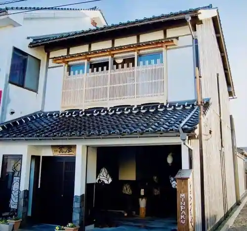
Minpaku Yorozuya / Minpaku
Inn in Yurayado, Hokuei with parking; 3-minute walk from Yura Station.
Dining
香味徳 由良店
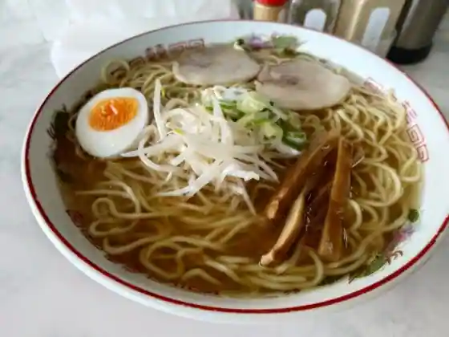
Komi Toku Yura
ラーメン幸雅
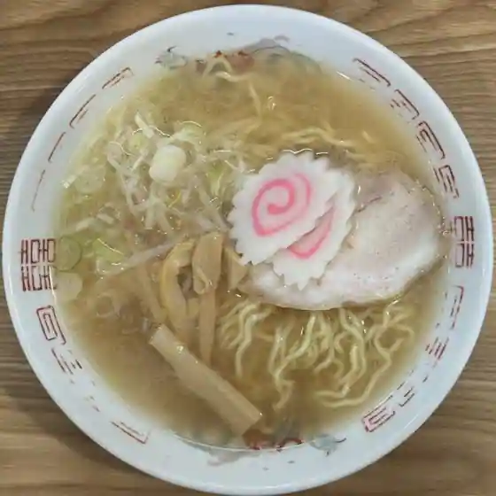
Ramen Sachi Masa
ねばりっこ食堂
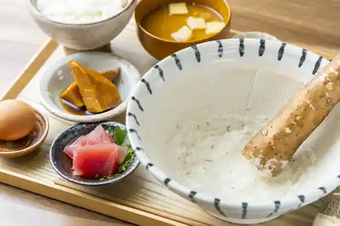
Nebarikko Shokudo
コナンズ キッチン
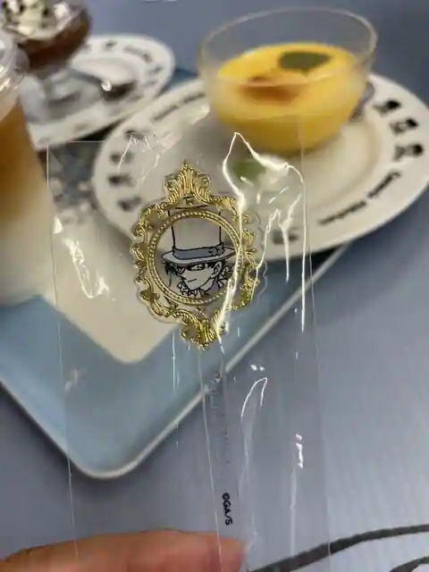
Konanzu Kitchen
喫茶ポアロ
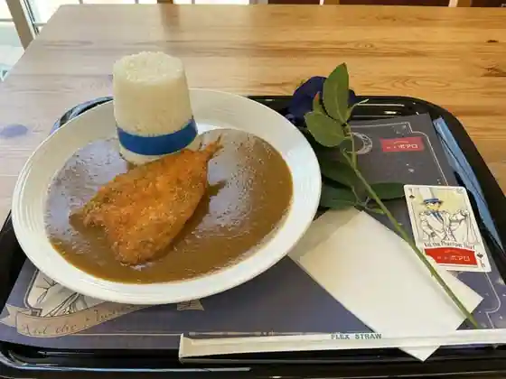
Kissa Poaro
コナン ジェラート
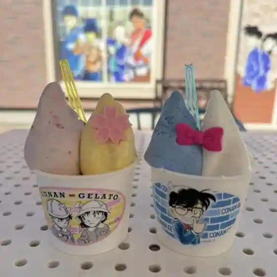
Konan Jierato
とりどりベーカリー
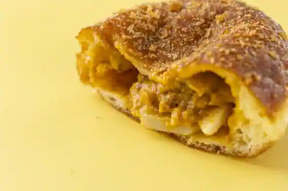
Toridori Bakery
ど真ん中食堂
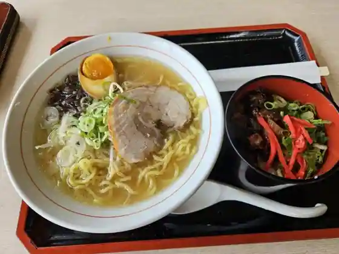
Do Mannaka Shokudo
Coda
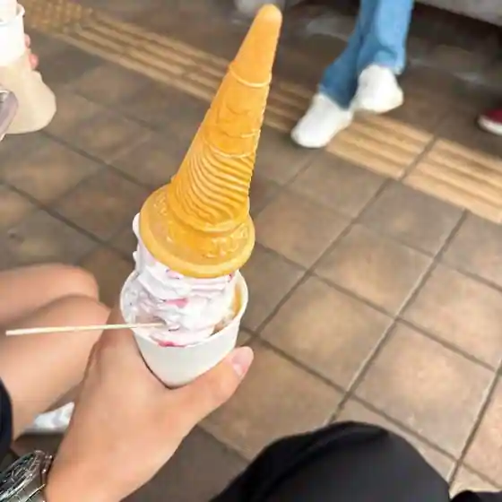
Coda
北条製麺所
Hojo Seimen Tokoro
砂とりどりスイーツ
Suna Toridori Sweets
お台場いちば
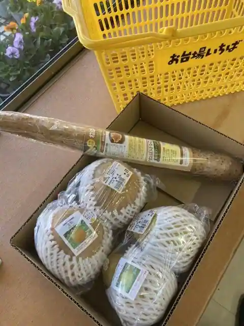
O Daiba Ichiba
京都らーめん
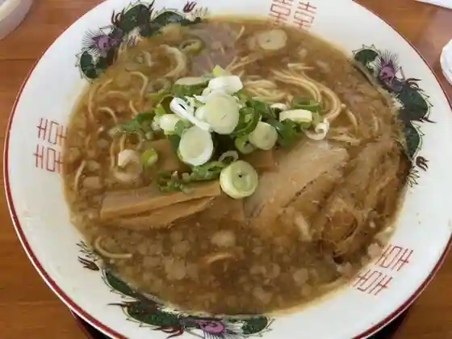
Kyoto Ramen
味もり多
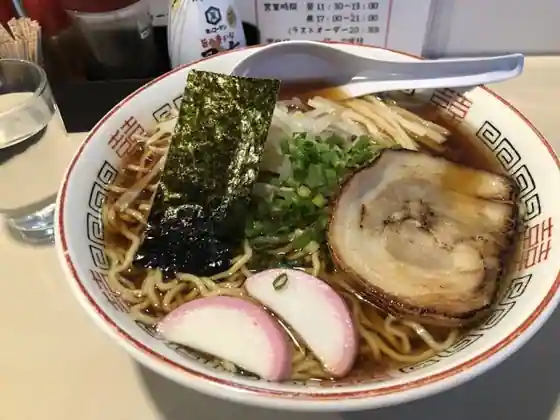
Aji Mori Ta
道の駅ほうじょう
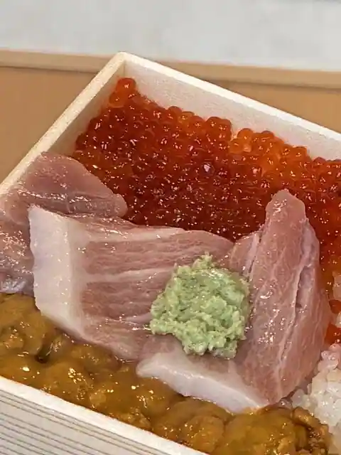
Michi No Eki Hojo
ベルハウス
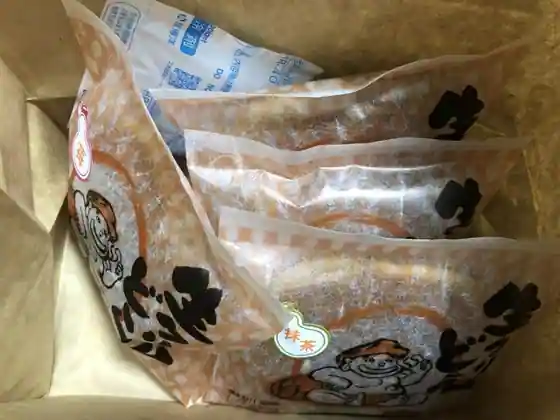
Beru House
ガガフレッシュジェラート 北栄店
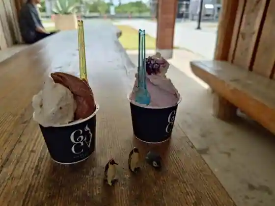
Gagafuresshujierato Hokuei
牛骨白湯らーめん 一たす
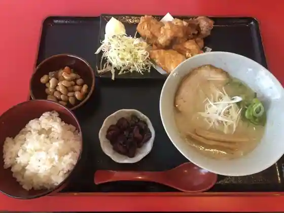
Ushibone Sayu Ramen Hitota Su
610キッチン
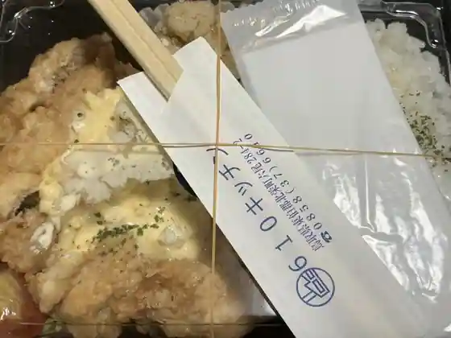
610 Kitchen
cafe no—ka
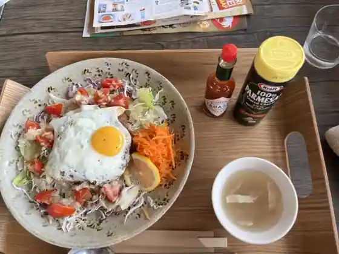
cafe no ka
お菓子工房ＳＯＲＡ
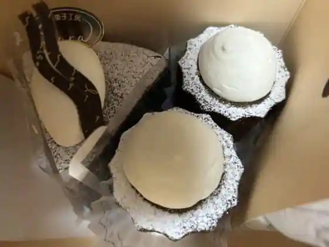
O Kashi Kobo SORA
nanakusa 木鳥
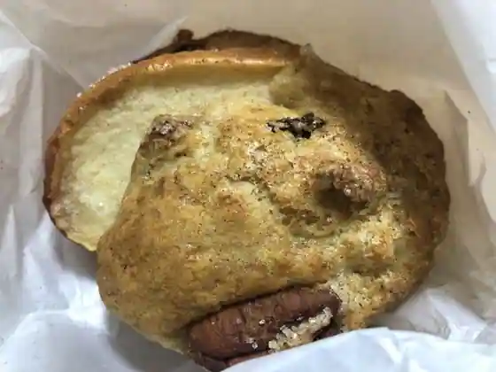
nanakusa Ki Tori
ホームベース焙煎所
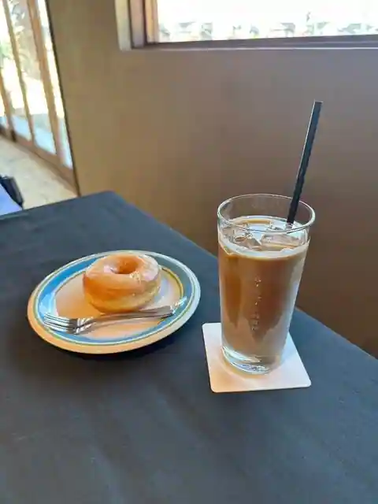
Homubesu Baisen Tokoro
天ころ屋
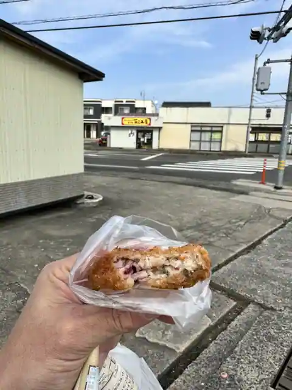
Koro Ya
Sights
Aoyama Gosho Furusato Kan
Roadside Station Daiei

Yuraku Tonari Workshop

Suikasofutokuriimu

Hojo Sakyu Furyokuhatsuden Tokoro Fusha Kengaku

Hojo Oto Campground
Hamane Farm
Yura Daiba Ato
Tomi Rei
Hokuei Town Hall